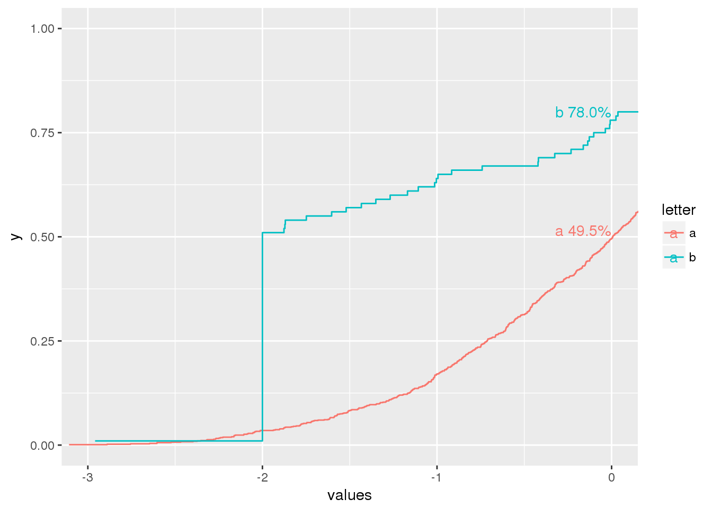

fake data
test_df <- data.frame(values = c(rnorm(1000), rep(-2, 50), rnorm(50)),
letter = c(rep("a",1000),rep("b",100)))Need to find the value of the cumulative probability at a certain time value.
Enter: ecdf()
One at a time:
(p_0_a <- ecdf(filter(test_df, letter == "a")$values)(0))
## [1] 0.495
(p_0_b <- ecdf(filter(test_df, letter == "b")$values)(0))
## [1] 0.78Or all at once:
Step 1: nest the data inside a new column.
test_df %>%
group_by(letter) %>%
nest(values)
## # A tibble: 2 x 2
## letter data
## <fctr> <list>
## 1 a <tibble [1,000 x 1]>
## 2 b <tibble [100 x 1]>Step 2: Shove that data into the ecdf function; and go ahead and evaluate at datapoint 0; drop the nested data
labels <- test_df %>%
group_by(letter) %>%
nest(values) %>%
mutate(y_at_0 = map_dbl(data, ~ecdf(.x$values)(0))) %>%
select(-data) %>%
print()
## # A tibble: 2 x 2
## letter y_at_0
## <fctr> <dbl>
## 1 a 0.495
## 2 b 0.780Step 3: plot it.
ggplot(data = test_df, aes(x = values, col = letter)) +
stat_ecdf(pad = FALSE) +
coord_cartesian(xlim = c(-3,0)) +
geom_text(data = labels, aes(x=0, y=y_at_0, label = paste(letter, scales::percent(y_at_0))), vjust = -0.25, hjust = 1)
This works because ecdf returns a function that takes in a value to evaluate
# returns a function
str(ecdf(test_df$values))
## function (v)
## - attr(*, "class")= chr [1:3] "ecdf" "stepfun" "function"
## - attr(*, "call")= language ecdf(test_df$values)